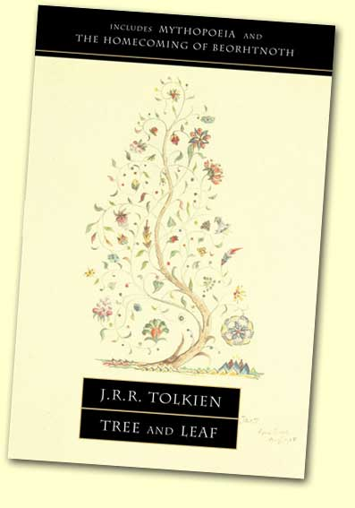

|
© 2021 Festival Art and Books. All rights reserved.
The Tolkien Professor
Leaf By Niggle
Corey Olsen
Leaf by Niggle is the story of a painter named Niggle, a “very ordinary and rather silly little man” (102). Through this story about Niggle and his enormous painting of a great tree, Tolkien reveals a great deal about his own understanding of the nature of human art. Tolkien articulates this understanding within an allegorical framework, however, so before we can work out Tolkien’s thoughts about art, we must first make sure we recognize the bigger picture.
Allegorical framework
The first thing we are told about Niggle is that he has “a long journey to make” (100). Although he does not want to go and finds the whole idea “distasteful,” he “could not get out of it.” His impending journey hangs over his head and gives his work on his great painting increasing urgency, but he “did not hurry with his preparations” for his travel. When the Driver shows up to take him away, therefore, he has almost nothing packed—“neither food nor clothes,” just a little bag containing only a paint-box and a book of sketches, and even this he leaves behind him on the train (107). Arriving at a train station with no luggage, he is told he must go to the Workhouse.
The Workhouse is a place of bitter medicine and “unfriendly, silent, and strict” attendants, and there Niggle is set to working hard at “digging, carpentry, and painting bare boards all one plain colour” (108). Niggle’s time at the Workhouse feels long and is unpleasant, but it is impossible to deny that its effects on Niggle are good. Niggle had been often idle before, and he “never finished anything” (119). His treatment in the Workhouse trains him to become “master of his time,” and he finds peace and rest (109). Although he is not amused there, he begins to have a new feeling of satisfaction: “bread rather than jam” (109).
After his case is discussed by the two Voices, he is allowed to go on to “the next stage” (112), what the kind and authoritative Second Voice calls “Gentle Treatment” (111). There he finds, to his astonishment, the Tree of his great painting, alive. In the background are the Mountains, which he had just glimpsed in the distance through the branches of the Tree while he had been painting before his journey. The Mountains are not part of that land, however, but are “a further stage: another picture.” After Niggle works with his former neighbor Parish for some time on the Tree and its accompanying house and garden, finding continued healing of body and spirit, Niggle finally walks to the “margin of that country,” at the edge of the Mountains (116). A guide appears who asks if he wants to go on, and Niggle does, walking “ever further and further towards the Mountains, always uphill” (118).
When we look at the basic plot of Niggle’s story like this, we can see its allegorical significance fairly clearly. The long and inescapable journey that brings Niggle’s worldly career to a sudden end is death. The Workhouse in which he spends such an unpleasant but ultimately fruitful time is purgatory, where the bad habits and sinful tendencies he has developed throughout his life are corrected. Niggle’s crossing into the final stage, the Mountains, represents his final journey into heaven or Paradise, and thus Tolkien says of the Mountains that “what they are really like, and what lies beyond them, only those can say who have climbed them” (118).
In the last issue, I noted Tolkien’s “cordial dislike” of allegory, and I argued at length about why Tolkien was so resistant to allegorical renderings of his fiction. It may therefore seem odd that I am now turning around and insisting on an allegorical reading of Leaf by Niggle. Remember, however, that Tolkien’s primary objection was against the cheapening and even the marginalization of The Lord of the Rings that would follow from people insisting on allegory where it was not intended. What mattered in his greatest works was the stories themselves and their mythic significance; they are not just the vehicles for certain ideas.
In Leaf by Niggle, however, Tolkien is working out some particular theories about art and setting out to illustrate them through a fictional story. Although Leaf by Niggle was originally published on its own in the Dublin Review in 1945, it was later paired with his seminal essay On Fairy-Stories and published in a new volume in 1964, titled Tree and Leaf. The coupling is a very natural one, for the concepts he represents in the story are very closely related to the theories he expounds in the essay. Tolkien explains the connection and acknowledges Niggle’s allegorical nature in one of his letters, and he even points to the signification of the allegorical frame by referring to the story as “purgatorial” (Letter 153). He does clarify in a different letter that the story is not a simple allegory; Niggle, for instance, is “a real mixed-quality person” rather than the embodiment of “any single vice or virtue,” as one might expect in a more thorough-going allegory (Letter 241, original emphasis).
|
 |
Art in Leaf by Niggle
Leaf by Niggle is primarily concerned with the nature and purpose of art. Keep in mind that this story does not deal with a work of extraordinary genius. The narrator admits that “it was not really a very good picture, though it may have had some good passages” (102). Niggle himself is no great master; even the generous Second Voice that he hears in the Workhouse admits that he is only a painter “in a minor way” (110). As the story proceeds, we must remember that what Tolkien is describing is an average piece of art by an average artist. If the claims Tolkien makes for art in this story are true for even Niggle’s painting, they are true of human art in general.
If we look carefully at Tolkien’s description of Niggle’s painting, the first thing we notice is that the painting seems to grow of its own accord. We are told that first “the tree grew,” then “strange birds came and settled on the twigs and had to be attended to,” and finally that “a country began to open out” in the background, containing glimpses of a forest and “mountains tipped with snow” (101). Niggle’s picture seems to have a life of its own; the artist himself seems not to be creating the work of art so much as discovering something which has an existence quite outside of himself.
The independent existence of the tree appears to be confirmed when Niggle finds himself standing before the living Tree during what the Second Voice calls “Gentle Treatment.” Here, in the purgatorial stage of Niggle’s afterlife, he meets the real Tree that he had been trying to paint all along. He even notices that the branches are “bending in the wind that he had so often felt or guessed, and had so often failed to catch” (113). It appears that Niggle has now moved past his art, which could create only a clumsy shadow of this Great Tree, and is now experiencing the subject of his art directly, with the veil lifted. During his life, he saw only in a glass, darkly, but now he sees face to face.
And yet, the cause-and-effect relationships turn out to be considerably more complicated than that. Niggle’s Tree is not just the cause of Niggle’s art, the pre-existing original that Niggle was somehow perceiving and attempting to imitate. Niggle and his art have actually served to generate this Tree. Niggle had specialized in painting leaves, and when he looks carefully at the leaves of the Great Tree, he sees that “all the leaves he had ever laboured at were there, as he had imagined them rather than as he had made them” (113). Niggle himself, his imagination, appears to be the source of these leaves, though their form is not limited by the clumsiness of Niggle’s hand. And he sees there not only the leaves he has painted, but those “that had only budded in his mind,” and even more remarkably, “many that might have budded, if only he had had time” (113). All of these leaves are derived from Niggle; they are idiosyncratic, each an example “of the Niggle style.” They even demonstrate the development of his thought, for they are in some indefinable way “dated as clear as a calendar.”
Neither Niggle’s art, nor the Tree itself, seems to be clearly the cause of the other. When Tolkien describes the painting, it sounds as if the Tree causes the picture. When Tolkien describes the Tree, it appears that Niggle’s art and imagination are its source. Niggle himself recognizes this paradox in his response to encountering the Tree. He exclaims “It’s a gift!” and Tolkien explains that he “was referring to his art, and also to the result” (113). Niggle resolves the situation by pointing to the fact that his art, the tree he painted, and the Tree made alive before him are all one large, complex divine gift.
The end of the story invites us to ask about the purpose of art. Tolkien shows us a modern perspective on this question in Councillor Tompkins, who is interested only in the “practical and economic use” of things, and who believes that each person should be made into a “serviceable cog” in the societal machine (118). The only function for an artist according to Tompkins is the design of propaganda. He sniggers at Niggle’s “old-fashioned” painting, calling it “private day-dreaming” (119). Tompkins recalls, with incredulous scorn, that when he once asked Niggle why he painted leaves and flowers, Niggle answered that he did it because “he thought they were pretty” (119).
Although Tompkins has no words in which to deride fittingly Niggle’s perspective, this simple answer is clearly held up as a highly laudable one throughout the story. Niggle loves leaves, and he spent “a long time on a single leaf, trying to catch its shape, and its sheen, and the glistening of dewdrops on its edges” (100-101). His attitude towards leaves is mentioned as a strong point in his favor by the Second Voice, who notes that “he took a great deal of pains with leaves, just for their own sake” (110). While Tompkins sees no intrinsic value in individuals and no beauty in living things, Niggle shows real humility. What is good about Niggle’s art is that it seeks no glory for itself; it merely pays tribute to the beauty that Niggle perceives even in small things.
Niggle’s love for small things is what leads to the big revelations. His great painting begins with “a leaf caught in the wind,” which then becomes a tree, and finally he can perceive the great mountains opening out behind it (101). When he leaves the Workhouse and comes to his Tree, he perceives that the Mountains do not really “belong to the picture”; they were “a glimpse through the trees of something different” (114), of a grandeur and beauty beyond the world.
Niggle’s artwork permits him to see, partially and from a distance, a vision of the heavenly realm. Moreover, his art may convey that vision to others, if they also approach it with humility. Niggle’s neighbor Parish never saw anything in Niggle’s painting during their lifetimes, calling it only “Niggle’s Nonsense” and “That Daubing” (117). But the shepherd who comes to guide Niggle into the mountains insists that, although the true beauty of the Tree and country around it had only been “a glimpse then,” Parish “might have caught the glimpse, if [he] had ever thought it worth while to try” (117). At the end of the story, the Second Voice observes that the Tree and its surroundings, the products of Niggle’s art, are for many “the best introduction to the Mountains” (120). Niggle recognizes that his art and its results are a gift to him, and in the end we see that they also serve as a gift to others.
This is the second in a series of articles providing a helpful way into the writings of J.R.R. Tolkien by The Tolkien Professor, whose informative podcasts have been very popular among fans. Visit his website at www.tolkienprofessor.com.